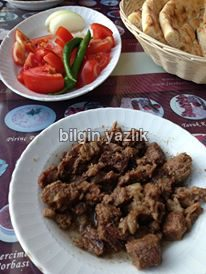

Diğer Rotalar · 30 Mayıs 2013
Kavurmacı Beko
Elazığ – Malatya karayolunun Karakaya barajı mevkisinde yer alan Beko ustanın kavurmalarıyla meşhur mekanı Kömürhan Kavurmada kavurma yedik. Son derece temiz ve nezih bir mekan sunan Beko usta, kavurmasının lezzeti ile bizden tam puan aldı. Yolunuz düşerse mutlaka buradan kavurma yiyin, ailecek gidebileceğiniz mekanın fiyatı da son derece makul.

Bu yazı taliyol arşivinden taşınmıştır. · özgün kayıt